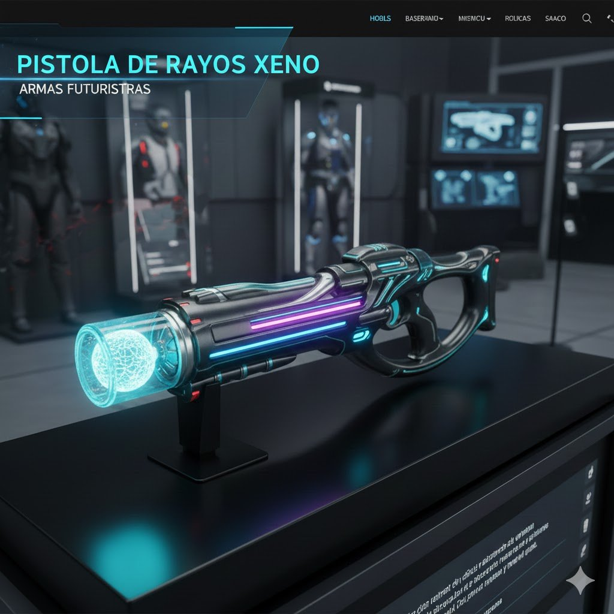

Pistola de Rayos Xeno
Arma de precisión silenciosa

Descripción
La Pistola de Rayos Xeno es el arma definitiva para operaciones encubiertas. Emite un haz de partículas Xeno ionizadas sin sonido ni retroceso, con una precisión milimétrica a 150 metros. Su batería se recarga con luz solar, permitiendo uso indefinido en entornos iluminados.
Características Técnicas
- Tipo de munición: Rayos Xeno ionizados
- Alcance efectivo: 150 metros
- Precisión: ±0.5 cm a 100 m
- Batería: Celda fotovoltaica de grafeno (recarga solar)
- Capacidad de disparos: Ilimitada con luz ambiental
- Peso: 0.7 kg
- Modos: Estándar, Silenciado, Punta láser
- Seguridad: Reconocimiento facial + huella dactilar
Formas de Uso
Diseñada para:
- Operaciones encubiertas: Sin ruido ni firma térmica.
- Agentes independientes: Recarga solar = autonomía total.
- Defensa personal: Compacta y de fácil manejo.
- Exploración espacial: Funciona en vacío absoluto.